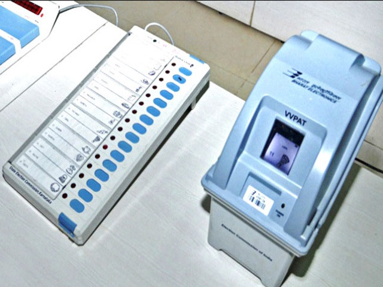

Secure Voting: Kings to Code
Elections are the core of a democratic nation. DemocracyTech explores the evolution of voting from public shows of power to secure, cryptographic, decentralized tech designed to protect every voice.
The Era of Monarchies
From kings with absolute power to highly public voting methods that lacked privacy or fairness.
Lack of Anonymity
In the past, political participation was controlled by elites. Early voting practices relied on raised hands or stones—choices were completely visible, leaving voters open to coercion, threats, and pressure.
Then vs. Now: The Evolution
From low-tech vulnerabilities to decentralized, audited cryptographic trust systems.

Digital EVMs
Fast, reliable electronic vote recording dramatically reduces manual counting errors and delays.
Encryption
Advanced zero-knowledge proofs and cryptography keep data fully confidential yet verifiable.
Biometrics
Fingerprint and facial ID verification eliminates duplicate voting and synthetic identities.
VVPAT Audit
Physical paper trails generated on the spot enforce an ultimate, immutable analog backup.
The Future is Secure
Modern democracies rely on impenetrable systems to mirror the true will of the people. Technologies like Web3/Blockchain and AI Auditing will revolutionize transparency and trust forever.